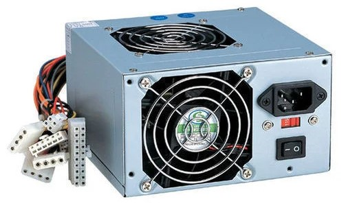
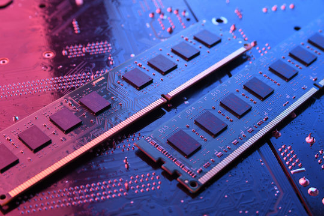
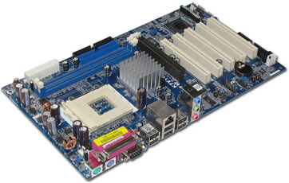

Identification of Switching Mode Power Supply (SMPS), Hard Disk, RAM, and Motherboard
Listen to Audio Explanation
Introduction
Understanding the core components of a computer system is essential for troubleshooting, upgrading, and assembling computing devices. This guide provides detailed information on identifying the Switching Mode Power Supply (SMPS), Hard Disk, RAM (Random Access Memory), and Motherboard. Each component plays a crucial role in system functionality, and their identification is vital for maintenance and repair.
SMPS
Converts AC to DC power for computer components
Hard Disk

Stores data permanently even when power is off
RAM
Temporary memory for fast data access by CPU
Motherboard
Main circuit board connecting all components
1. Switching Mode Power Supply (SMPS)
1.1 What is SMPS?
A Switching Mode Power Supply (SMPS) is an advanced power supply unit that converts high-voltage AC (Alternating Current) to low-voltage DC (Direct Current) required by computer components. Unlike traditional linear power supplies, SMPS employs high-frequency switching regulators, which improve efficiency and reduce power loss.
1.2 Identifying an SMPS
Location: The SMPS is housed in the computer case, typically at the rear, either at the top or bottom.
Physical Features:
- A metallic enclosure with a cooling fan to dissipate heat
- A power input socket for the main AC power cable
- An ON/OFF switch (in some models)
- Various cables and connectors for different components
- A label indicating wattage, voltage ratings (+3.3V, +5V, +12V, etc.), and safety certifications
Connectors and Their Purpose:
- 24-pin ATX Connector – The main power supply for the motherboard
- 4/8-pin CPU Connector – Powers the processor (CPU)
- SATA Power Connectors – Supplies power to hard drives and SSDs
- PCIe Power Connectors – Used for high-performance graphics cards
- Molex Connectors – Legacy connectors for older peripherals
- Berg Connector – Used for floppy disk drives (rare in modern PCs)
1.3 Types of SMPS
- ATX Power Supply – Standard for desktop computers, with multiple voltage rails
- SFX Power Supply – Smaller size for compact cases
- TFX Power Supply – Thin form factor for slim desktops
Modular vs. Non-Modular:
- Modular SMPS – Allows detachment of unused cables, improving airflow
- Non-Modular SMPS – Fixed cables, commonly found in budget builds
2. Hard Disk Drive (HDD) and Solid-State Drive (SSD)
2.1 What is a Hard Disk?
A Hard Disk Drive (HDD) is an electromechanical data storage device that stores and retrieves digital data using magnetic storage. In contrast, a Solid-State Drive (SSD) utilizes NAND flash memory for superior speed and reliability.
2.2 Identifying a Hard Disk
Location: Mounted inside the computer case, usually in a designated drive bay or on the motherboard (for M.2 SSDs).
Physical Features:
- HDDs are typically 3.5-inch (desktop) or 2.5-inch (laptop) rectangular metal casings with spinning platters inside.
- SSDs come in 2.5-inch SATA, M.2, or PCIe NVMe form factors, with no moving parts.
- A label indicates manufacturer details, storage capacity, and RPM (for HDDs).
Connectors:
- SATA Data Connector – Transfers data to the motherboard
- SATA Power Connector – Powers the drive from the SMPS
- NVMe (M.2) Connector – Used for high-speed SSDs directly mounted on the motherboard
- IDE Connector – Found in older HDDs, replaced by SATA
2.3 Types of Storage Devices
- HDD (Hard Disk Drive) – Traditional, larger storage, slower speed (5400/7200 RPM)
- SSD (Solid-State Drive) – Faster, durable, low power consumption
- Hybrid Drives (SSHD) – Combines SSD speed with HDD capacity
- NVMe SSDs – High-speed, used for gaming and professional applications
3. Random Access Memory (RAM)
3.1 What is RAM?
RAM (Random Access Memory) is a volatile memory module that stores temporary data for quick access by the processor. It plays a critical role in multitasking and overall system performance.
3.2 Identifying RAM
Location: Installed in RAM slots on the motherboard.
Physical Features:
- A long, thin circuit board with memory chips soldered onto it
- Notches ensuring correct insertion into the slot
- A label indicating type (DDR3, DDR4, DDR5), speed (MHz), and capacity (GB)
Types of RAM:
- DDR3 – Older, slower, lower bandwidth
- DDR4 – Common in modern PCs
- DDR5 – Latest, highest bandwidth, used in high-performance systems
3.3 RAM Slots and Installation
- Desktop motherboards typically have two to four RAM slots.
- Color-coded slots indicate dual-channel support for improved performance.
- RAM modules must match in type, speed, and capacity for